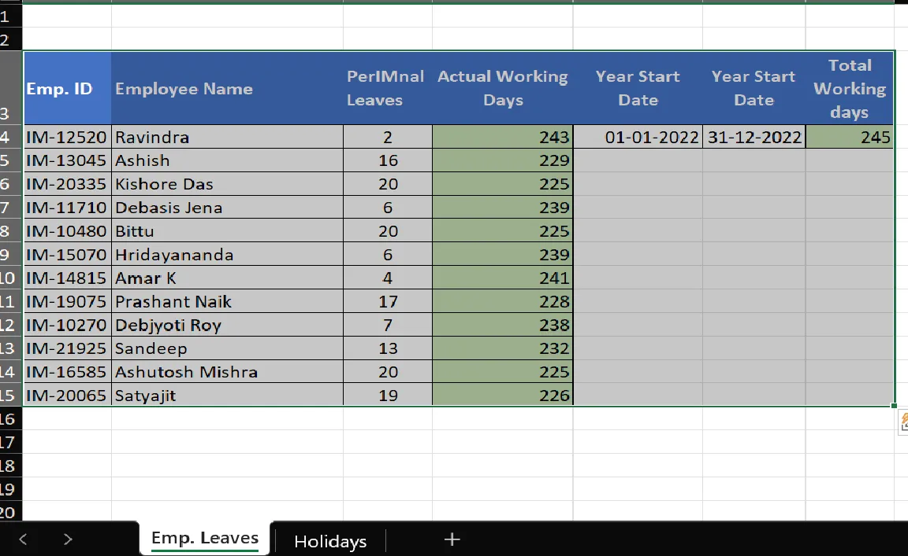
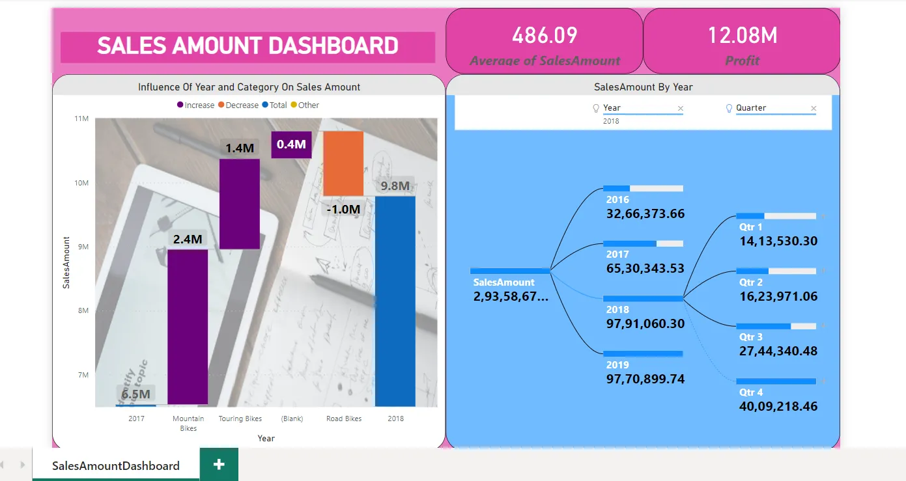

Automate Excel With Python
VBA can be used for automating many repetitive
Excel file formatting tasks. But due to a
specific requirement of one of my clients,
VBA was strictly forbidden. It was a pain
point for him doing the same task every week,
which consumed several hours of his workday.
I came out with a simple Python script using
packages like Openpyxl and Tkinter. With a
little bit of instruction, I was glad I could
save a lot of his time and effort. Watch out
for the brief demo in the adjacent video 😊😎😊
View Project / Demo ↗

Interactive Dashboard Of A Mid-Size Retail Shop
There are a lot of small and mid-size grocery
or kirana shops in my locality. I approached
one of them that had been using an older
version of MS Excel.
I understood how they envisioned their sales
reporting and came up with an interactive
dashboard based on daily transactions they
captured in their Excel files 😊😎😊

Blood Pressure Tracker
One of my engineering batchmates became my
first client. He was not proficient in
Excel or Google Sheets. His elderly mother
suffers from hypertension, due to which
her blood pressure changes rapidly.
One useful approach was to track her blood
pressure. After several conversations, he
agreed to enter her readings almost daily.
I developed a pivot chart on the captured
data to identify the peak systolic rate
of the day. This data analysis helped him
review the readings when discussing
medication decisions with the appropriate
healthcare professional 😊😎😊

Employee Leave Tracker
The owner of a small business could not
afford to spend money on expensive CRM tools.
He uses MS Excel and Google Sheets for most
of his work.
He has around 10 to 15 employees who work
and take leaves on a roster basis. It was
nice to interact with him and come up with
an employee leave tracker 😊😎😊
PDF To Excel Conversion
The client receives pdf files on a weekly basis,
however, they are better analyzed in an excel format.
Converting pdf to excel then becomes a task of paramount importance.
Here are the sample of the files which were changed as part of this project.
All the real time client data have been replaced by dummy data.😊😎😊
View Project Folder ↗

Sales Amount Dashboard Using Power BI
A real estate promoter wanted to create a
dashboard using Power BI for visualization.
This was achieved by using Decomposition Tree,
Waterfall charts and cards to describe the
KPIs based on dummy data provided by the
client ☺🙂😎🙂🤗
Some project materials may use sample or dummy data.
Replace the placeholder image paths with your actual
image filenames and update the Google Drive links
before publishing this page.